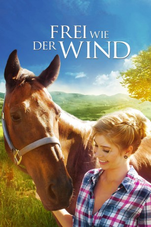

#8864 Frei wie der Wind
Alternativ: Spirit Riders
 
 IMDB-Wertung: 4.4 / 10
IMDB-Wertung: 4.4 / 10  Metascore: 0
Metascore: 0 
Teenager Kacie ist beim Einbruch in eine Apotheke ertappt worden. Weil das nicht ihre erste Straftat war, darf sie nun wählen zwischen 30 Tagen im Knast oder 60 Tagen Dienst auf einer Pferdefarm, die gleichzeitig als therapeutische Einrichtung für behinderte Jugendliche dient. Wenig begeistert entscheidet sich Kacie für letzteres und steht mit ihrer neuen Umgebung auch zunächst auf Kriegsfuß. Das ändert sich, als sie Verantwortung für ein ebenfalls renitentes Ex-Rennpferd übernimmt und sich mit dem autistischen Mike anfreundet.
Jahr: 2015
Dauer: 88 Minuten
FSK: 6
Land: USA Studio: 4Digital MediaTonspuren: DTS - ,
Untertitel: Deutsch,
Auflösung: 1080p (1920x1008) Größe: 4526 MB
Genre: Familie
Regisseur: Brian T. Jaynes
Drehbuch: David Wilson
Soundtrack: Justin R. Durban
Darsteller:
- Maddy Davidson als
- Alexandria DeBerry als
 Lance Henriksen als
Lance Henriksen als  C. Thomas Howell als
C. Thomas Howell als - Quinn Leifur als
- Vernon Reeves als
- Kim Jackson Wheeler als
- Jennifer Davidson als
- Laura Evans als
- Carol Hickey als
- Tristin Koppie als
- Jordan LeuVoy als
- Craig Nigh als
- Olivia Osteen als
- Amber Saxon als
Datei: X:\2015(A-F)\Frei wie der Wind (2015, FSK6, 1920x1008).mkv seit 03.05.2018
Festplatte: HD 2015(A-Z)
 Es gibt insgesamt 143 Filme in der Gruppe '2015(A-F)'
Es gibt insgesamt 143 Filme in der Gruppe '2015(A-F)'